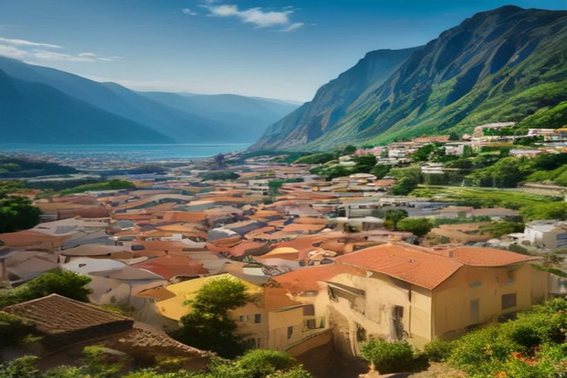
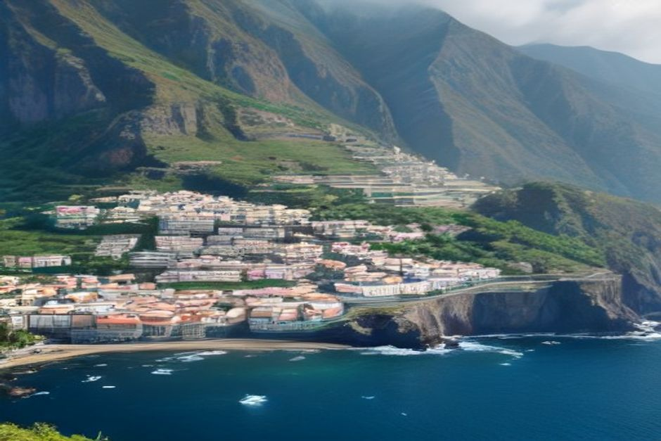

Quien busca «ciudades de Madeira» se lleva una sorpresa: en la isla hay una sola ciudad de verdad, Funchal, y lo demás son pueblos. Ahí está precisamente el encanto de la isla de Madeira. Estos diez son los que justifican el desvío, con lo que ofrece cada uno y cuáles combinan bien en un mismo día.
Primero, una idea de cómo se reparte la isla
Madeira es pequeña, pero sus carreteras no engañan: son curvas, túneles y cuestas, y los trayectos tardan más de lo que sugiere el mapa. Por eso conviene pensar en dos bloques y no intentar abarcarlo todo.
La costa sur es la del puerto, las terrazas con vistas al mar y los pueblos de pescadores. La costa norte es más verde, más salvaje y, como suele pasar en el norte de cualquier isla atlántica, más cambiante. Si le preocupa el tiempo en Madeira, tenga en cuenta que no hace lo mismo en todas partes: Ponta do Sol, en el sur, es el punto con más horas de sol de la isla, y el norte pide un plan B por si se cierra el día. Mire siempre la previsión del pueblo concreto antes de salir, no solo la de Funchal.
Una regla práctica: entre tres y cuatro pueblos en un día es realista. Con más, el viaje se convierte en una sucesión de aparcamientos.
Los tres de la costa sur que van juntos
Câmara de Lobos: el puerto que pintó Churchill
Es el puerto pesquero en activo más fotogénico de Madeira: arena volcánica negra, casas de pescadores apiñadas y las barcas de espada que todavía salen de noche a por el pez espada negro. Winston Churchill pintó aquí el acantilado en 1950, y el mirador que lleva su nombre sigue enmarcando la misma vista. Es también la primera parada del Day Trip privado de Chifbay, a diez minutos en barco desde la marina de Funchal.

Ribeira Brava: el pueblo para bañarse y comer junto al mar
Ribeira Brava está donde un río se encuentra con el mar. Tiene una playa de guijarros lo bastante tranquila para darse un baño y una iglesia del siglo XVI, São Bento, con una cúpula de tejas en forma de pirámide que se reconoce a lo lejos. Está a medio camino de la carretera de la costa sur y es un sitio natural para parar a comer.
Ponta do Sol: una hora de sol y café
El pueblo más soleado de la isla se ha convertido en refugio de trabajadores remotos. Tiene un muelle pequeño, una cala de arena negra y varias cafeterías buenas. Merece una parada de una hora aunque no vaya a dormir allí. Es además el punto más lejano del Day Trip ampliado de 3 horas de Chifbay.
La costa norte: piscinas, cuevas y casas de paja
Seixal: qué ver en el rincón más tranquilo del norte
Quien pregunta «Seixal Madeira qué ver» busca esto: las piscinas naturales más calmadas y con menos gente de la costa norte, tan resguardadas que se pueden usar en condiciones que cerrarían las de Porto Moniz. Detrás del pueblo suben bancales de plataneras, y una cascada, el Véu da Noiva, cae sobre la carretera de la costa justo antes de llegar.
Desde esta zona también se llega con facilidad al altiplano del bosque de Fanal, la laurisilva de árboles viejos y retorcidos que aparece entre la niebla. Si va a pasar el día en el noroeste, Seixal, Porto Moniz y Fanal forman un plan redondo. Eso sí, el bosque es el sitio donde más se nota que el tiempo en la montaña no es el de la costa: lleve una capa de abrigo.
Porto Moniz: para bañarse, no para tumbarse en la arena
Porto Moniz no tiene playa. En su lugar, las olas del Atlántico llenan piscinas naturales talladas en la roca de lava, y esa es la razón de venir. Está en la punta noroeste de la isla, a más o menos hora y media de Funchal por la carretera de la costa. Las piscinas están más concurridas, y más calientes, a primera hora de la tarde.
São Vicente: cuevas en un barranco verde
Aquí está la visita a las Grutas de São Vicente, cuevas de tubo volcánico formadas por una erupción hace unos 890.000 años. El propio barranco, escarpado, verde y mucho más estrecho que la costa sur, ya justifica la parada. Es el punto intermedio natural si recorre la costa norte entera en un día.
Santana: las casas triangulares de paja
Los palheiros son casas triangulares de tejado de paja y puertas pintadas de colores vivos, habitadas de verdad hasta hace pocas décadas. Algunas se conservan como pequeño museo al aire libre a las afueras del pueblo. La parroquia de alrededor celebra cada septiembre la Festa do Faial, una de las fiestas religiosas más antiguas de la costa norte.
Dentro de la isla y en el este
Curral das Freiras: el pueblo escondido en un cráter
Si se pregunta Curral das Freiras qué ver, la respuesta es el conjunto: el pueblo está en el fondo de una caldera volcánica hundida, se llega por una carretera que atraviesa la montaña en túnel y el mirador de Eira do Serrado enmarca todo el valle desde arriba. Su nombre, «el corral de las monjas», recuerda a unas religiosas de un convento de Funchal que se refugiaron aquí en el siglo XVI para huir de los piratas. Las castañas, que se cultivan en las laderas sobre el pueblo, aparecen en todo, de la sopa al licor.
Machico: donde desembarcaron los primeros colonos
La expedición de João Gonçalves Zarco desembarcó aquí en 1419, de modo que es el punto habitado más antiguo de la isla. Hoy tiene una de las pocas playas de arena de Madeira, con paseo marítimo y un pequeño fuerte, y está a cinco minutos del aeropuerto. Es una parada natural el primer o el último día del viaje.
Calheta: la playa de arena dorada importada
Calheta trajo arena dorada de Marruecos para construir la playa que casi toda la costa de Madeira no tiene de forma natural. Además cuenta con una pequeña marina y un centro cultural moderno, Casa das Mudas. Está en el extremo oeste de la costa sur, a casi una hora de Funchal, así que es más una excursión de día que una parada rápida.

Cómo combinarlos según el tiempo que tenga
- Un día por la costa sur: Câmara de Lobos, Ribeira Brava y Ponta do Sol. Es el trío más fácil de enlazar.
- Un día por el noroeste: Seixal, Porto Moniz y, si el día acompaña, el bosque de Fanal.
- Un día por el norte entero: São Vicente y Santana, con una parada en las cuevas y otra en las casas de paja.
- Medio día: Curral das Freiras con el mirador de Eira do Serrado, o Machico si llega o sale en avión.
Si prefiere no conducir, la costa sur también se puede ver por mar. Puede consultar las excursiones en barco en Madeira o los detalles prácticos en la guía de información.
Los pueblos del sur, vistos desde el agua
La carretera une estos pueblos. El agua enseña por qué cada uno está donde está.
Chifbay es una empresa de barcos privados en Funchal: el barco entero es solo para su grupo, hasta 5 personas, con dos patrones locales con licencia, a bordo de un Karnic R8S de 2026. Se sale de la Marina do Funchal, pantalán C.
- Day Trip: salida a las 10:00 o a las 14:00. Son 2 h 30 hasta Ribeira Brava por 500 EUR, o 3 h hasta Ponta do Sol por 600 EUR. Incluye Câmara de Lobos, Cabo Girão y un baño con paddle boards en Fajã dos Padres.
- Atardecer: sale 1 h 15 antes de la puesta de sol, todo el año. Son 2 h hasta Cabo Girão por 400 EUR, o 2 h 30 hasta Ribeira Brava por 500 EUR. Sin parada para el baño.
Los precios son por el barco entero, no por persona. Todas las salidas incluyen comida y bebida a bordo, un vídeo 360° con Insta360, imágenes de dron si el tiempo lo permite y fotos hechas con una cámara de verdad. La cancelación es gratuita hasta 24 horas antes de la salida. Puede leer lo que cuentan otros clientes en las opiniones o ver todas las experiencias.
Cuántos pueblos ver importa menos que tener tiempo para quedarse en cada uno.
Y para seguir leyendo sobre la isla, tiene más guías en el Diario y la propuesta principal en la página de inicio.